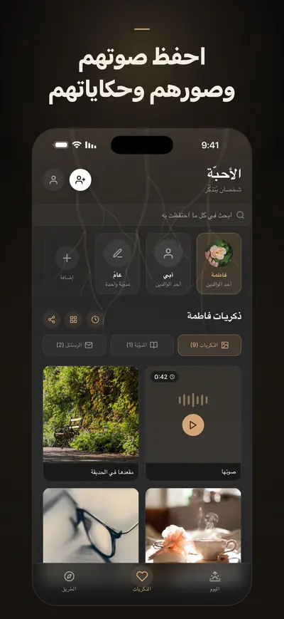
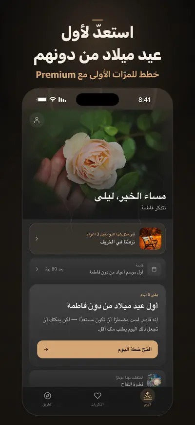

Solace Tree: يوميات الحزن
رسائل ودعاء وذكريات لمن فقدت
Solace Tree دفتر يوميات لحزنك على من فقدته: احفظ صوره وصوته وحكاياته، واكتب إليه الرسائل التي لم تستطع إرسالها، واستعدّ للأيام التي تؤلم.
لأجهزة iPhone. البدء مجاني، والاشتراك في Premium اختياري.


ومع Premium تخطّط أيضًا لأول رمضان وأول عيد من دونه وللمرّات الأولى الأخرى في التواريخ التي تحدّدها، وتحوّل ما تحفظه إلى كتاب تأبين، وتبقى لديك نسخة مشفّرة في الاتحاد الأوروبي تعود إلى iPhone جديد.
صُمّم للأشهر التي تلي الفقد، حين يتوقّع الجميع أنك صرت بخير وأنت لست كذلك. الذكريات، والرسائل الموجَّهة، ودفتر يومياتك، وذكرى ميلاده وذكرى وفاته، والتفقّد اليومي، والتنفّس، ودعم الأزمات: كلها مجانية وتبقى مجانية. لا شيء هنا يستعجلك، ولا شيء يحسب لك نقاطًا، ولا يُشارَك شيء مما تكتبه إلا إذا اخترت ذلك.
احفظ ذكرياتهم
- صور ومقاطع فيديو وتسجيلات صوتية، مع الحكايات التي وراءها
- خط زمني للذكريات لكل شخص تستذكره
- كل شيء في مكان واحد هادئ، بدل أن يتفرّق في هاتفك
اكتب إليهم
- رسائل موجَّهة، ومع Premium مسارات رسائل أعمق: ما لم تستطع قوله، وما تودّ أن تشكرهم عليه، وما ستحمله معك
- محفّزات تأمّل لطيفة للأيام التي تغيب فيها الكلمات
- دفتر يوميات خاص لكل ما بين ذلك
استعدّ للأيام الصعبة
- ذكرى ميلادهم وذكرى وفاتهم؛ ومع Premium أول رمضان وأول عيد من دونهم، في التواريخ التي تحدّدها
- طقوس صغيرة تستند إليها: نَفَس، ذكرى، لحظة هدوء؛ ومع Premium رسالة أو زيارة أو شمعة
- تذكيرات هادئة قبل الموعد بأيام، كي لا يباغتك يوم صعب
حوّل الذكريات إلى تذكارات (مع Premium أو حزمة التذكارات)
- كتاب تأبين، أو خط زمني للذكريات، أو بطاقات استذكار، جاهزة للطباعة أو الحفظ
- تُصنع على جهاز iPhone مما حفظته
للّحظات الثقيلة
- تفقّد يومي قصير، بلا درجات ولا أحكام
- تمارين تنفّس وتأريض حين يثقل الحزن على جسدك
- برنامج موجَّه لثلاثين يومًا يرافقك في الأسابيع الأولى بعد الفقد
- سلوى من التقاليد الإيمانية، إن كانت جزءًا من حياتك
- خط دعم أو رقم الطوارئ على بُعد لمسة، حين تحتاج إلى أكثر مما يقدّمه تطبيق
خصوصيتك أولًا
تُحفظ ذكرياتك وكتاباتك على جهاز iPhone، أما تفقّدك اليومي ومزاجك والإيمان الذي تختاره فلا تغادره أبدًا، حتى مع Premium. لا إعلانات ولا تتبّع، ولا يُشارَك شيء مما تكتبه إلا إذا اخترت ذلك. ومع Premium تُحفظ نسخة في نسخ احتياطي سحابي في الاتحاد الأوروبي، مشفّرة أثناء النقل والتخزين؛ وإن تابعت باستخدام Apple من الملف الشخصي، تعود إلى iPhone جديد إن فقدت هاتفك.
Premium
تنزيل Solace Tree مجاني، وما تستخدمه كل يوم يبقى مجانيًا: الذكريات، واليوميات، والتفقّد اليومي، والتنفّس، ودعم الأزمات. ويضيف Premium:
- خططًا لمزيد من الأيام الصعبة: أول عيد، والمرّات الأولى الأخرى، وتواريخ تختارها بنفسك
- حزم طقوس للرسالة والزيارة والشمعة
- طرق كتابة أعمق مع مزيد من قوالب الرسائل ومحفّزات التأمّل
- أعزّاء وذكريات ومدخلات يوميات بلا حدود
- تصدير التذكارات: كتب التأبين والخطوط الزمنية للذكريات
- النسخ الاحتياطي السحابي والمزامنة، مع 250 ميغابايت للصور ومقاطع الفيديو والتسجيلات الصوتية
Solace Tree رفيق في الطريق، ولا يغني عن الدعم المتخصّص. خطوط الأزمات وأرقام الطوارئ حسب البلد
متوفّر بالعربية والإنجليزية والتركية والألمانية والإسبانية والفرنسية.